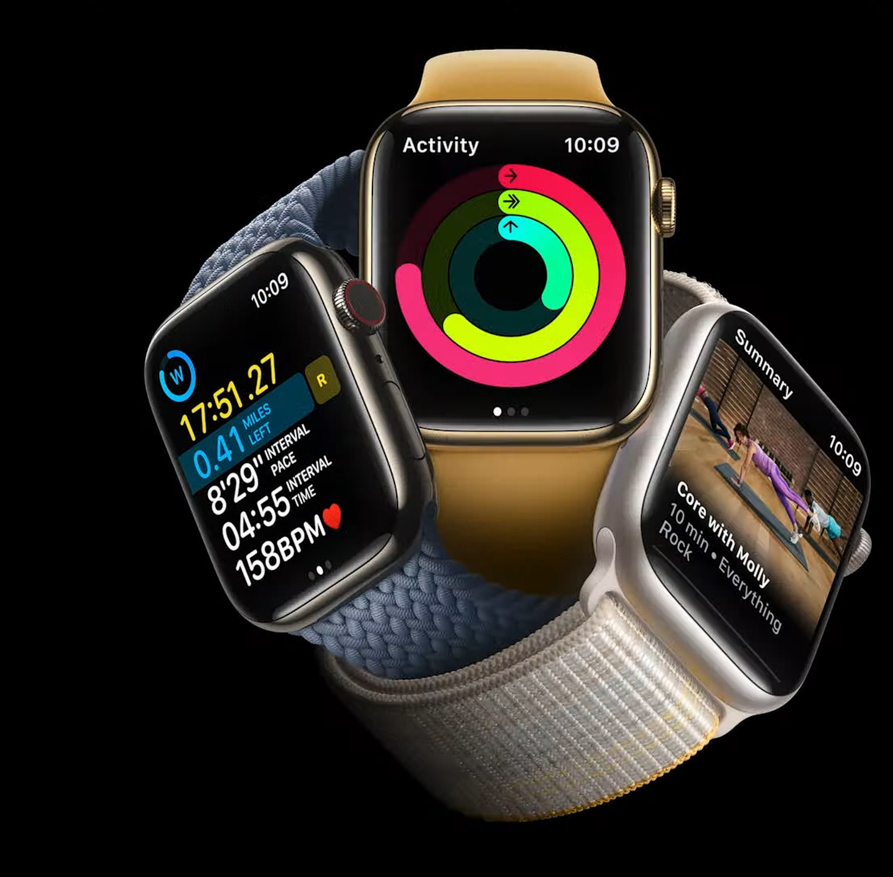
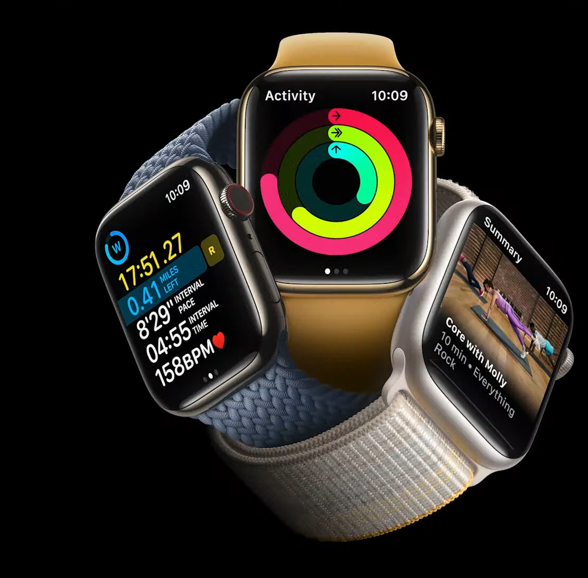

L'apple Watch
L’Apple Watch, c’est une montre connectée qui a rapidement su s’avérer indispensable. En effet, elle ne se contente pas de donner tout simplement l’heure. Synchronisée en permanence avec votre iPhone, elle affiche vos notifications en temps réel : SMS, appels, réseaux sociaux… D’un simple mouvement du poignet, vous pouvez consulter vos messages et y répondre brièvement. C’est très pratique pour ceux dont le téléphone sonne toutes les cinq minutes et qui n’ont pas envie de le sortir en permanence de leur sac. Dans un cadre professionnel, l’Apple Watch est également un assistant précieux. Elle vous rappelle vos rendez-vous et vous permet de lire à tout moment vos e-mails, même de manière discrète lors d’une réunion entre collaborateurs.
Niveau autonomie ça donne quoi ?
Plein de looks différents
 

Une multitude de braceltes defferents permettront d'habiller votre Apple watch a votre gout. Prendre la mesure de son poignet avant de se lancer dans un achat : étape indispensable. Rien de plus simple : à l'aide d'une cordelette ou d'un mètre ruban, il vous suffit de prendre la mesure de votre poignet pour ne pas que votre bracelet ne soit trop large ou au contraire trop serré, ce qui ne serait pas flatteur.
Une connectivité epoustouflante
Nos revendeurs partenaires